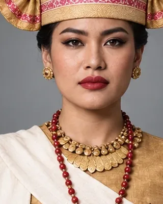
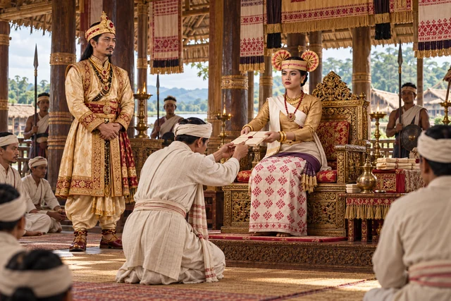

সৰ্বেশ্বৰী
Bar Raja 1739–1744 · Queen who ruled as Bar Raja

Held the same authority as her predecessors but was less active in patronising Shaktism.
Record confidence: medium.
Open interactive profile

1739